Компоненты
Конденсатор
Конденсатор — крошечный аккумулятор, который очень быстро заряжается и очень быстро разряжается.
Основные характеристики
Ёмкость - Фарад(C)
Максимальное напряжение - Вольт(V)
Кодирование номинала

Номинал в пФ записан на корпусе. Первые 2 цифры — основание, 3-я — множитель. Например:
•220 = 22 × 100 пФ = 22 пФ
•471 = 47 × 101 пФ = 470 пФ
•103 = 10 × 103 пФ = 10 000 пФ = 10 нФ
•104 = 10 × 104 пФ = 100 000 пФ = 100 нФ
Поведение
Если подаваемое напряжение больше внутреннего накопленного, конденсатор будет заряжаться.
Если внешнее напряжение меньше внутреннего, конденсатор будет отдавать заряд.
Время заряда и разряда
Для связывания уровня заряда конденсатора с временем используют понятие «постоянной времени τ»:
За τ секунд конденсатор заряжается или разряжается на 63%
За 5×τ секунд конденсатор заряжается или разряжается на 99%
Если резистора в схеме нет, его роль исполняет паразитное сопротивление проводов, разъёмов, дорожек, составляющее доли Ома
Резистор
Резистор — искусственное «препятствие» для тока. Сопротивление в чистом виде. Резистор ограничивает силу тока, переводя часть электроэнергии в тепло.

Основные характеристики
Сопротивление - Ом(R)
Мощность - Ватт(P)
Цветовая кодировка резисторов
Наносить номинал резистора на корпус числами — дорого и непрактично: они получаются очень мелкими. Поэтому номинал и допуск кодируют цветными полосками.
Разные серии резисторов содержат разное количество полос, но принцип расшифровки одинаков.
Цвет корпуса резистора может быть бежевым, голубым, белым. Это не играет роли.
Если не уверены в том, что правильно прочитали полосы, можете проверить себя с помощью мультиметра.
Типовые номиналы для экспериментов
Диод
Диод — это электрический «ниппель». У него есть 2 полюса: анод и катод. Ток пропускается только от анода к катоду.
Основные характеристики
Падение прямого напряжения - Вольт(VF)
Максимальное сдерживаемое обратное напряжение - Вольт(VDC)
Максимальный прямой ток - Ампер(IF)
Вольт-амперная характеристика
После того, как напряжение в прямом направлении превысит небольшой порог VF диод открывается и начинает практически беспрепятственно пропускать ток, который создаётся оставшимся напряжением.
Если напряжение подаётся в обратном направлении, диод сдерживает ток вплоть до некоторго большого напряжения VDC после чего пробивается и работает также, как в прямом направлении.
Виды диодов
Выпрямительный диод
Также известен как защитный, кремниевый
VF=0,7B
VDC — сотни или тысячи вольт
Открывается медлено
Восстанавливается после пробоя обратным током
Диод Шоттки
Шоттки — фамилия его изобретателя. Также известен как сигнальный, германиевый.
VF=0,3B
VDC — десятки вольт
Открывается быстро
Сгорает после пробоя обратным током
Диод Зеннера

Зеннер — фамилия его изобретателя. Также известен как стабилитрон
VF=1B
VDC — фиксированное значение на выбор
Умышленно используется в обратном направлении как источник фиксированного напряжения
Светодиод
Светодиод (англ. Light Emitting Diode или просто LED) — энергоэффективная, надёжная, долговечная «лампочка».
Светодиод — вид диода, который светится, когда через него проходит ток от анода (+) к катоду (−).

Основные характеристики
Падение напряжения - Вольт(VF)
Номинальный ток - Ампер(I)
Интенсивность (яркость) - Кандела(IV)
Длина волны (цвет) - Нанометр(λ)
Восприятие световых волн человеком
Типовая схема включения
Собственное сопротивление светодиода после насыщения очень мало, и без резистора, ограничивающего ток через светодиод, он перегорит.
Порядок «резистор до» или «резистор после» — не важен.
Поиск подходящего резистора
Рассчитаем какой резистор R в приведённой схеме нам нужно взять, чтобы получить оптимальный результат. Предположим, что у нас такой светодиод и источник питания:
Найдём оптимальное сопротивление R и минимально допустимуюмощность резистора PR.
Сначала поймём какое напряжение должен взять на себя резистор:
По закону Ома найдём значение сопротивления, которое обеспечит такое падение:
Таким образом:
При сопротивлении более 135 Ом яркость будет ниже заявленной.
При сопротивлении менее 135 Ом срок жизни светодиода будет меньше.
Теперь найдём мощность, которую при этом резистору придётся рассеивать:
Это означает, что при мощности резистора менее 54 мВт резистор перегорит.
Простое правило
Чтобы не заниматься расчётами резистора каждый раз во время проведения экспериментов, можно просто запомнить правило для самого типичного сценария.
Для питания 1 светодиода на 20 мА от 5 В используйте резистор от 150 до 360 Ом.
Кнопка
Тактовая кнопка — простой, всем известный механизм, замыкающий цепь пока есть давление на толкатель.
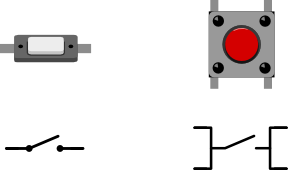Кнопки с 4 контактами стоит рассматривать, как 2 пары рельс, которые соединяются при нажатии.
Эффект дребезга
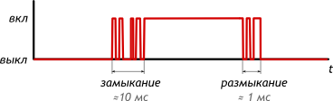При замыкании и размыкании между пластинами кнопки возникают микроискры, провоцирующие до десятка переключений за несколько миллисекунд. Явление называется дребезгом (англ. bounce). Это нужно учитывать, если необходимо фиксировать «клики».
Схема подключения
Напрашивается подключение напрямую. Но это наивный, неверный способ.

Пока кнопка нажата, выходное напряжение Vout = Vcc, но пока она отпущена, Vout ≠ 0. Кнопка и провода в этом случае работают как антенна, и Vout будет «шуметь», принимая случайные значения «из воздуха».
Пока соединения нет, необходимо дать резервный, слабый путь, делающий напряжение определённым. Для этого используют один из двух вариантов.
Схема со стягивающим резистором
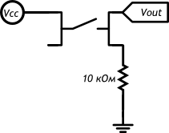Есть нажатие: Vout = Vcc
Нет нажатия: Vout = 0
Схема с подтягивающим резистором
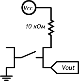Есть нажатие: Vout = 0
Нет нажатия: Vout = Vcc
Биполярный транзистор
Транзистор — это электронная кнопка. На кнопку нажимают пальцем, а на биполярный транзистор — током.
Транзисторы используют для управления мощными нагрузками при помощи слабых сигналов с микроконтроллера.
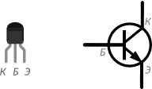Нога, выполняющая роль «кнопки» называется база (англ. base)
Пока через базу течёт небольшой ток, транзистор открыт:
большой ток может втекать в коллектор (англ. collector)
и вытекать из эмиттера (англ. emitter)
Основные характеристики
Макс. напряжение коллектор-эмиттер - Вольт(VСЕ)
Максимальный ток через коллектор - Ампер(IС)
Коэффициент усиления (hfe)
Типовая схема подключения

Транзистор усиливает максимально допустимый ток в hfe раз:
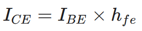Пример расчёта
Если управляющий сигнал на базе транзистора с hfe и резистором номиналом 1 кОм составляет 5 вольт:
Какой максимальный ток сможет пропустить через себя транзистор?
Каким по величине будет управляющий ток?
Дано
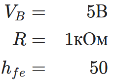Найти
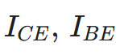Решение
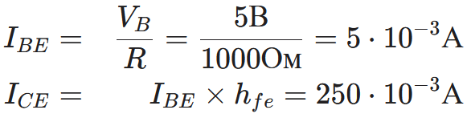Вывод
Если на базу подаётся 5 В через резистор в 1 кОм, транзистор откроется настолько, что будет способен пропустить до 250 мА. При этом управляющий ток составит всего 5 мА
Полевой транзистор
Полевой MOSFET-транзистор — ключ для управления большими токами при помощи небольшого напряжения.
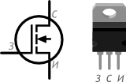«Кнопка» называется затвором (англ. gate)
Пока на затворе есть небольшое напряжение, транзистор открыт:
большой ток может втекать в сток (англ. drain)
и вытекать из истока (англ. source)
В отличие от биполярного транзистора полевой контролируется именно напряжением, а не током. Т.е. в открытом состоянии ток через затвор не идёт.
Используйте MOSFET для управления большими токами, от сотен миллиампер, когда дешёвого биполярного транзистора уже не достаточно.
Основные характеристики
Максимальное напряжение сток-исток - Вольт(VDS)
Максимальный ток через сток - Ампер(ID)
Сопротивление сток-исток - Ом (RDSon)
Рассеиваемая мощность - Ватт (PD)
Типовая схема подключения
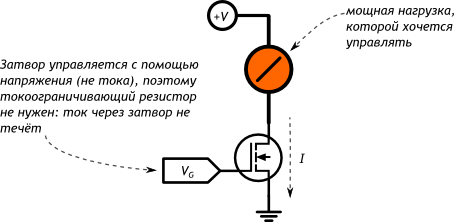Рассеивание тепла
Транзистор не идеален и часть пропускаемой мощности превращается в тепло.
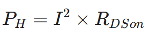Если PH превысит PD, без помощи дополнительного охлаждения транзистор сгорит.
Пьезодинамик
Пьезоизлучатель звука (англ. buzzer) переводит переменное напряжение в колебание мембраны, которая в свою очередь создаёт звуковую волну.

Иначе говоря, пьезодинамик — это конденсатор, который звучит при зарядке и разрядке.
Основные характеристики
Рекомендуемое (номинальное) напряжение - Вольт (V)
Громкость (на заданном расстоянии) - Децибел (P)
Пиковая частота - Герц (fp)
Ёмкость - Фарад (C)
Амплитудно-частотная характеристика
Амплитудно-частотная характеристика (АЧХ) определяет громкость звука в зависимости от частоты управляющего сигнала, который и определяет высоту звучащей ноты.
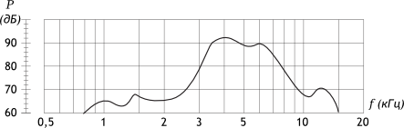Идеальная АЧХ — это прямая, т.е. одинаковая громкость вне зависимости от частоты. Но мир не идеален и разные виды излучателей имеют разные отклонения от идеала.
Подключение напрямую
Пьезодинамик потребляет всего пару мА, поэтому можно смело подключать его прямо к микроконтроллеру
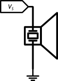Для звучания нужно подавать на динамик квадратную волну. Какой частоты будет волна, такой частоты будет и звук
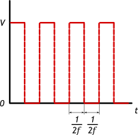Подключение с регулировкой громкости
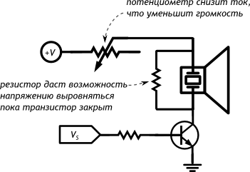